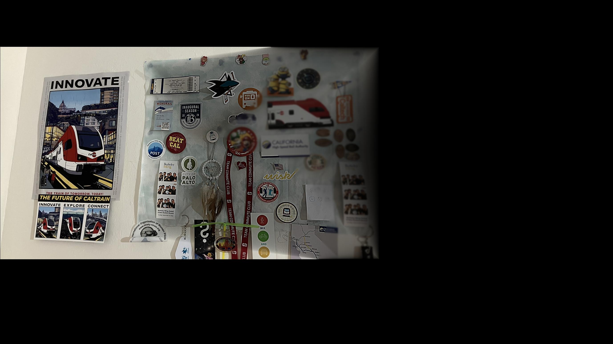
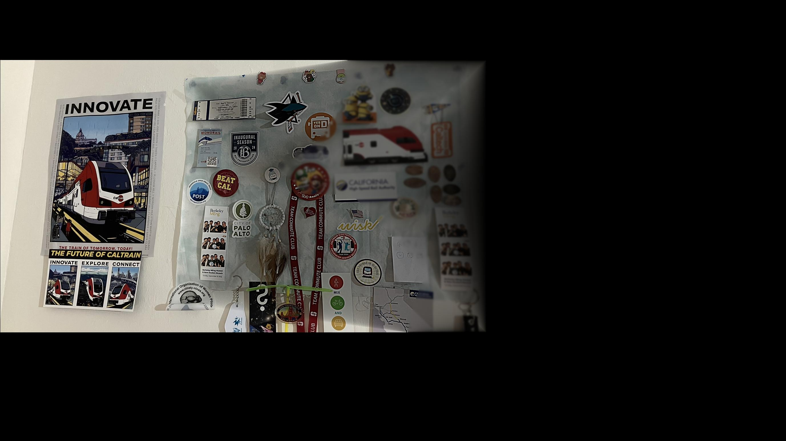
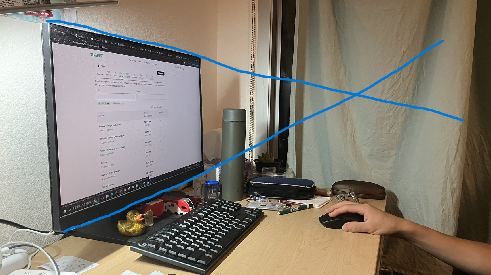

Image 1 apply weight:


Image 2 apply weight:

This project warps images into different perspectives. Combining with blending techniques, we can further build mosiacs that consist of multiple photos.
Omitted. Please see the following sections.
First, label the two images using the provided tool. Suppose \((x, y, 1), (wX, wY, w)\) is a pair of corresponding points. We got the equation \(H\begin{bmatrix}x\\y\\1\end{bmatrix}=\begin{bmatrix}wX\\wY\\w\end{bmatrix}\), where \(H\) is the transformation matrix. Let \(H=\begin{bmatrix}a&b&c\\d&e&f\\g&h&1\end{bmatrix}\). We can rewrite it as \[\begin{cases} ax+by+c = wX\\ dx+ey+f = wY\\ gx+hy+1 = w \end{cases}\] Substituting the first two equations by the third one, we get \[\begin{cases} ax+by+c = (gx+hy+1)X\\ dx+ey+f = (gx+hy+1)Y \end{cases}\] Thus \[\begin{cases} ax+by+c-gxX-hyX = X\\ dx+ey+f-gxY-hyY = Y \end{cases}\] Since \(x, y, X, Y\) are constants, we have eight unknown variables. They can be solved with at least 4 pairs of corresponding points. If we have more than 4 pairs (over-determined), we can obtain a least-square error solution.
As we did in project 3, the warped image is obtained by inverse mapping (\(H^{-1}\)) the coordinates and interpolating the nearby pixels. However, it is helpful to map the four corners into new coordinates first to determine the size and boundaries of the new image. With this information, we can create an array of coordinates in the region of the new image and then map them back to the original image to obtain the pixel values. Additionally, we can create a mask of the shape of the new image, which is helpful for the blending task later.
Note that if we warp too much, it would fail. In the image below, the top and bottom lines of the monitor intersect within the image. If we want the monitor to become a rectangle in the warped image, the resulting \(H\) will map the points in the right of the intersection to some coordinates \(\begin{bmatrix}\cdot\\\cdot\\w\end{bmatrix}\) where \(w\) is negative, which is impossible to transform into a valid coordinate.
First, we warp the second image so that its labels match the first image. We also build masks for both images to indicate their meaningful region (because many parts of the warped image is completely black), and the distance maps that indicate the distance of each pixel to the bounderies of the images. Since the shape and size of the second image changes significantly after warping, we add zero paddings to the two images so that their shapes and positions align. The same paddings also apply to the masks and distance maps. Then we separate the low and high frequency components of both images using a Gaussian filter. For the overlapped region, each pixel of the low frequency component is the weighted sum of two images, weighted by their distance map values. Each pixel of the high frequency component is either from image 1 or image 2, depending on which one has larger distance map value. This 2-level Laplacian pyramid blending significantly improves the results, comparing to direct mixing (taking the average values of two images in the overlapped region).
Here are some other examples: